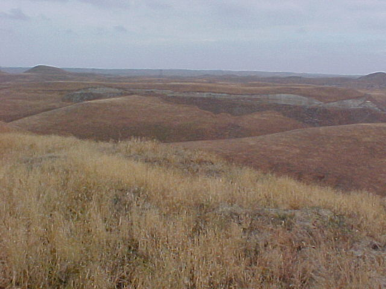
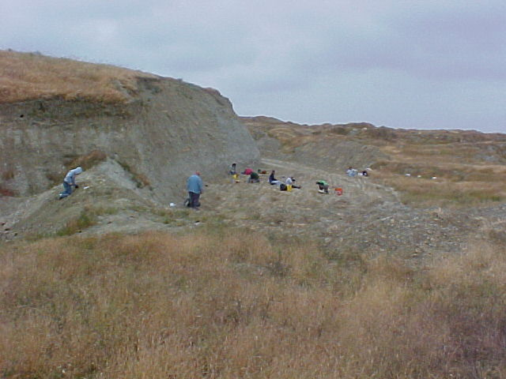
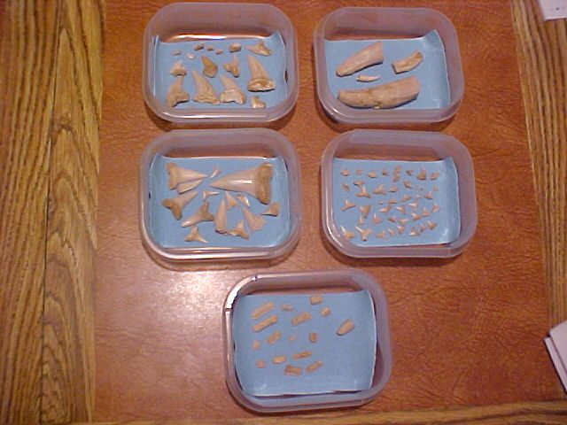
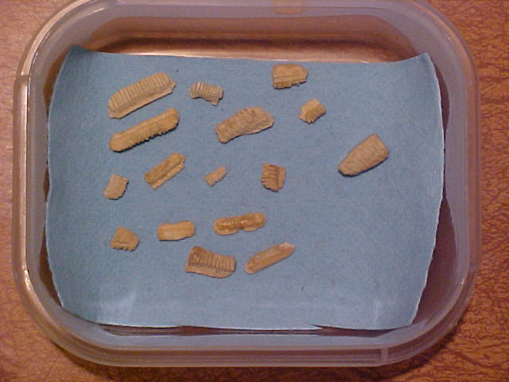
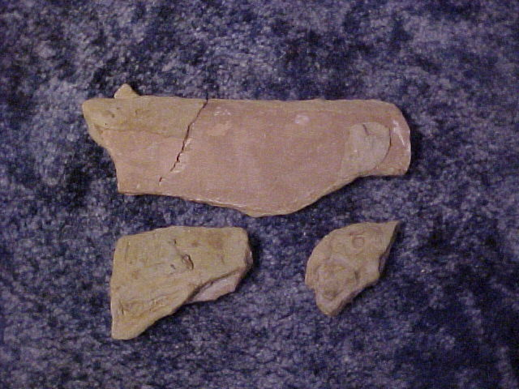
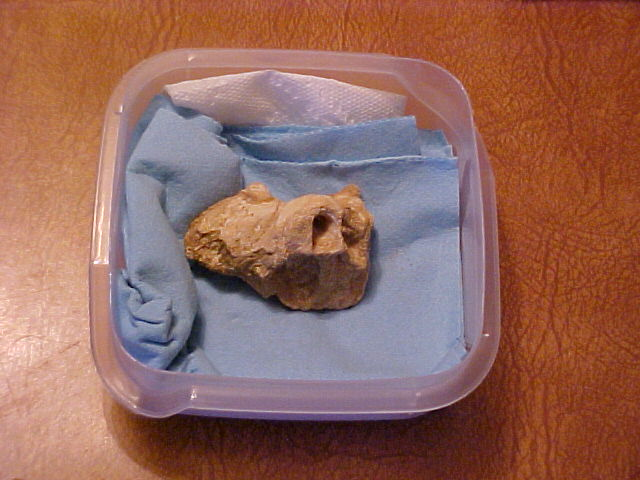

If sharks were there, it must have been covered with water.
If sharks were there, it must have been covered with water.| Feature Article - May 2007 |
| by Do-While Jones |
Sometimes, it's not what you see in the museums, but what you don't see that should draw your attention.
|
"Is there any point to which you would wish to draw my attention?" "To the curious incident of the dog in the night-time." "The dog did nothing in the night-time." "That was the curious incident," remarked Sherlock Holmes 1 |
There is a nice little museum in Bakersfield, California, called the Buena Vista Museum of Natural History. 2 One of their patrons owns some land northeast of Bakersfield which contains rich fossil beds. This area is called "Sharktooth Hill" for a reason you might easily guess. Occasionally this patron allows museum members to dig on his land as a fundraiser for the museum. (It costs $25 to become a member, and then $50 per day to dig on selected weekends. 3) I took the opportunity to do this on April 25, 2005, and encourage you to do so, too, if the opportunity ever arises.
The area northeast of Bakersfield consists of rolling hills whose tops are roughly equal in height.

The museum officials use a bulldozer to clear off the dirt above the bonebed a few days before the dig days, allowing museum members to dig the rest of the way down to the fossils.

In just four hours of digging I found lots of shark teeth and a few other kinds of teeth.

I was told that the pencil-shaped teeth came from a porpoise or dolphin. The teeth below came from some kind of ray (sting ray, manta ray, etc.).

I didn't find any shark bones because sharks don't have bones. Shark skeletons are made of cartilage, which is the stuff that makes your nose stiff. Cartilage doesn't fossilize well. That's why hominid skulls all have a hole where the nose should be. Artists have to guess what hominid noses looked like, and they guess they looked partly human, partly apelike, because of their evolutionary prejudice. But that's another story.
Whales do have bones, and I found a dozen or so broken pieces of whale ribs. Just a few of them are shown below.

The most significant thing I found was identified as the ear bone of a whale; but it wasn't important enough that the museum wanted to keep it. It remains in my collection.

I discovered that the best way to find the fossils was to take big chunks of sediment back home. At home I put the chunks in a plastic tub of water, where they immediately turned to mud. I put the mud in a kitchen sieve and washed the mud away, leaving the teeth and a little bit of gravel in the sieve. Many of the shark teeth I found were less than ¼ inch (6 mm).
The museum contains many fossils found at Sharktooth Hill, and other places. They tell you,
|
Twelve to fifteen million years ago during the time period geologists call the Miocene Epoch most of Kern County was an ocean bay. The waters lapped against rolling hills that were soon to be pushed up to form the Sierra Nevada Mountains. Northeast of Bakersfield, where the modern Kern River leaves the Sierra Nevadas, a river flowed into the bay. The river carried sediments and the remains of plants and animals into the bay. These materials, along with the plentiful remains of marine organisms, sank to the bottom and much of the organic remains was fossilized. Subsequent geologic events pushed up the sediments, and they then eroded to form the rolling hills that include Sharktooth Hill. Exposed in these hills is the bone bed that formed from those fossil-rich sediments. The Sharktooth Hill bonebed encompasses more than 110 square miles, but most of it is deep underground. Only east of the Bakersfield area is it exposed. 4 |
You would probably believe that, if you didn't actually go on the dig and see the Sharktooth Hill bonebed. You might even believe it if you did go on the dig and left your brain in neutral. We hope you are more skeptical and less gullible than most people apparently are.
Why do they think Kern County was once "an ocean bay?" We suppose it is because there are lots of shark teeth found there. Sharks generally live in oceans. When was the last time you heard about anyone bitten by a shark in a desert, forest, or prairie? If sharks were there, it must have been covered with water.
But they have also found fossils from 138 species of vertebrate animals including birds, cats, dogs, horses, camels, and deer mixed in with all those shark teeth. 5 How did all those animals get out in the ocean? They claim, "The river carried sediments and the remains of plants and animals into the bay."
The key, as we have hinted at the beginning of this essay, is what ISN'T in the museum. They don't have a wonderful shell collection. Shouldn't the bottom of an ocean bay be littered with seashells? Why don't they have a wonderful display of all the different kind of shells that lived around Bakersfield 12 to 15 million years ago?
It could be that they have lots of shells, but don't display them in the museum and don't mention them on the web page because they aren't important. But wouldn't it be important to see how much, or how little, shells have evolved in 12 to 15 million years? If you got 'em, flaunt 'em.
I suspect they don't display Kern County shells because they don't have very many. Maybe they don't have any at all. When I dug there, I didn't find a single shell. I didn't even find a piece of a broken shell. But I did find tiny shark teeth that were so small they were difficult to pick up without tweezers. If there were any shells, or shell fragments, I think I would have noticed them. And I found the teeth and bones in dried mud, not sand. Sharktooth Hill just doesn't look like what I would expect the bottom of a shallow bay to look like.
The geological setting is more consistent with some sort of terrible storm, or maybe a tremendous flood, that covered the Bakersfield area with a lot of water and mud, leaving beached whales and sharks alongside dead birds and land animals. The area seems to have been covered by dirt that washed down from the nearby mountains in the subsequent decades. Eventually rain eroded the dirt into the rolling hills we see today.
| Quick links to | |
|---|---|
| Science Against Evolution Home Page |
Back issues of Disclosure (our newsletter) |
| Web Site of the Month |
Topical Index |
Footnotes:
1
Arthur Conan Doyle, Silver Blaze. In: The Penguin complete Sherlock Holmes. London: Penguin, 1981.
2
2018 Chester Ave., Bakersfield, CA 93301. http://www.sharktoothhill.com/index.html
3
http://www.sharktoothhill.com/sharktooth_hill_dig.html
4
http://www.sharktoothhill.com/sharktooth.html
5
http://www.sharktoothhill.com/sharktooth_hill_fauna.doc